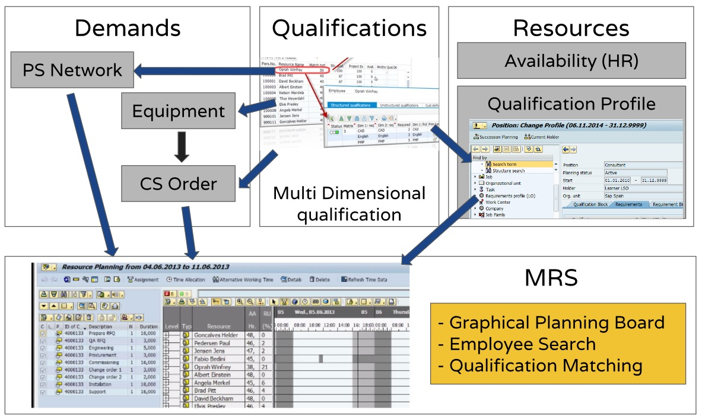

Technologies used in the project
The following technologies were either used by the team in carrying out the project work or are included as part of the proposed technical solution for the client requirements.
SAP Multiresource Scheduling
Provide a ‘Scheduler Workplace’ within which the Maintenance Planner can work to balance the maintenance demands with supply of required resources such as labour, tools, support equipment, or facilities. Helps in getting visibility into resource availability, maintenance status and data, to provide efficient collaboration across the planning process, minimize manual data input and errors, and provide accurate estimates and forecasts resulting in an optimized use of resources.
Some of its features are:
- Graphical interfaces to plan resources and demands manually using information about open demands, the utilization of resources, and possible conflicts with the current resource planning situation.
- Automatic support for resource planning based on availability, qualifications, and partner roles, as well as utilization-based automatic assignment creation and intelligent shifting of existing assignments.
- Optimization of daily assignment planning, for example, to maximize utilization, minimize travel times, or adhere to SLAs.
Enterprise Architecture Tools
To assist in modeling the current (as-is) and future (to-be) states of the organization at both the business and application levels, we needed to tool. There are several solutions aiming to help enterprise architects and business stakeholders get a digital representation of their organization and its strategy, goals, business processes, and resourceshelp enterprise architects and business stakeholders get a digital representation of their organization and its strategy, goals, business processes, and resources.
The one used is Archimate Tool a free, open source alternative. Compliant with ArchiMate 2.1 (from Open Group), runs as a per-client install, but using a plugin: “Git Friendly Archi File Collection" we were able to export our models in separate .xml files for each model entity enabling control of architecture with Git/GitHub which also allow us to package the architecture for export as HTML website.
SAP ERP: Support for Flight Operations
The "Support for Flight Operations" area supports processes carried out by airborne units in the domestic base, operations, and exercises. This includes the planning, control, and coordination of flight operations, the execution and control of maintenance, and administration. As a result, it is possible to execute flights, from planning through to technical debriefing.
SAP Multiresource Scheduling
SAP MRS is a solution for resource management that allows planners to visualize maintenance demand status and assign requests to the maintenance staff and tools using a graphical planning board.

SAP FIORI
SAP Fiori is intended to provide a whole new level of user experience (UX) to SAP software suite. It provides a faster and more responsive user interface while applying modern and robust design principles in order to provide a delightful and meaningful user experience. The name “Fiori” is an Italian word meaning “Flowers” and the proponents behind this technology see it as a gift for users for its beauty and usability.